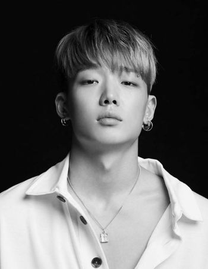
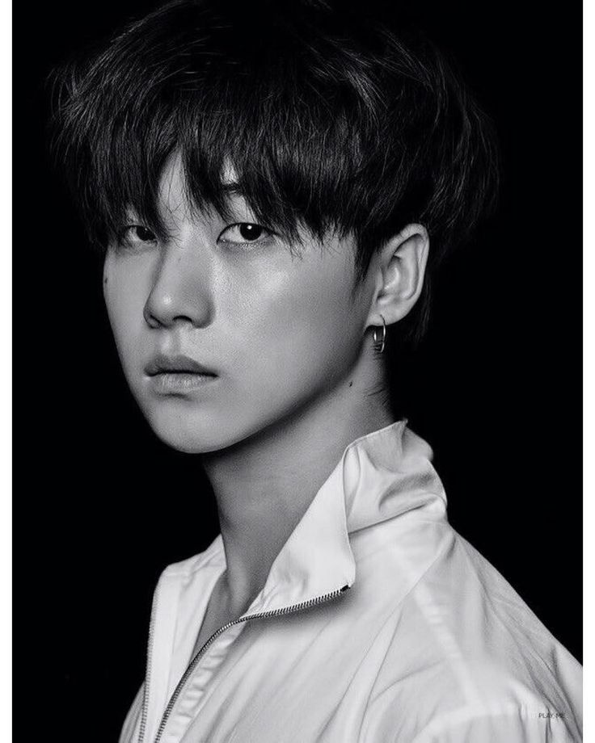
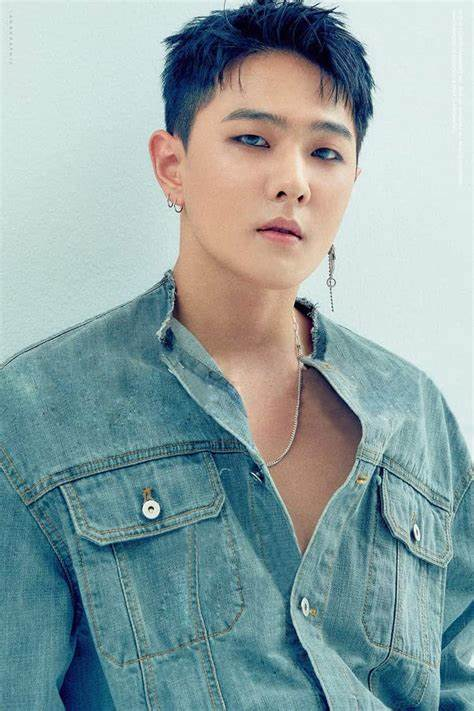

| Image | Artist Name | Position | Born | Occupations |
| B.I | Team Leader | Kim Han Bin 22/10/1996 South Chungcheong, South Korea |
Rapper Singer Songwriter Record producer Executive producer |
|
|---|---|---|---|---|
|  | Bobby | Rapper | Kim Ji Won 21/12/1995 Seoul, South Korea |
Rapper Singer Songwriter Producer |
 |
Ju-ne | Vocals | Gu Jun-hoe 31/3/1997 Seoul, South Korea |
Singer Dancer Songwriter Actor |
|  | Jay | Main Vocals | Kim Jinhwan 7/2/1994 Jeju , South Korea |
Main Vocals Lead Dancer |
|  | DK | Main Dancer | Kim Donghyuk 3/1/1997 Seoul, South Korea |
Main Dancer Lead Vocalist Sub Rapper |
| Song | Vocalist | Song Yunhyeong 8/2/1995 Seoul, South Korea |
Sub-Vocalist Visual Center |
|
| Chan | Vocals | Jung Chan-woo 26/1/1998 Songpa-gu, Seoul, South Korea |
Singer Actor YouTuber |